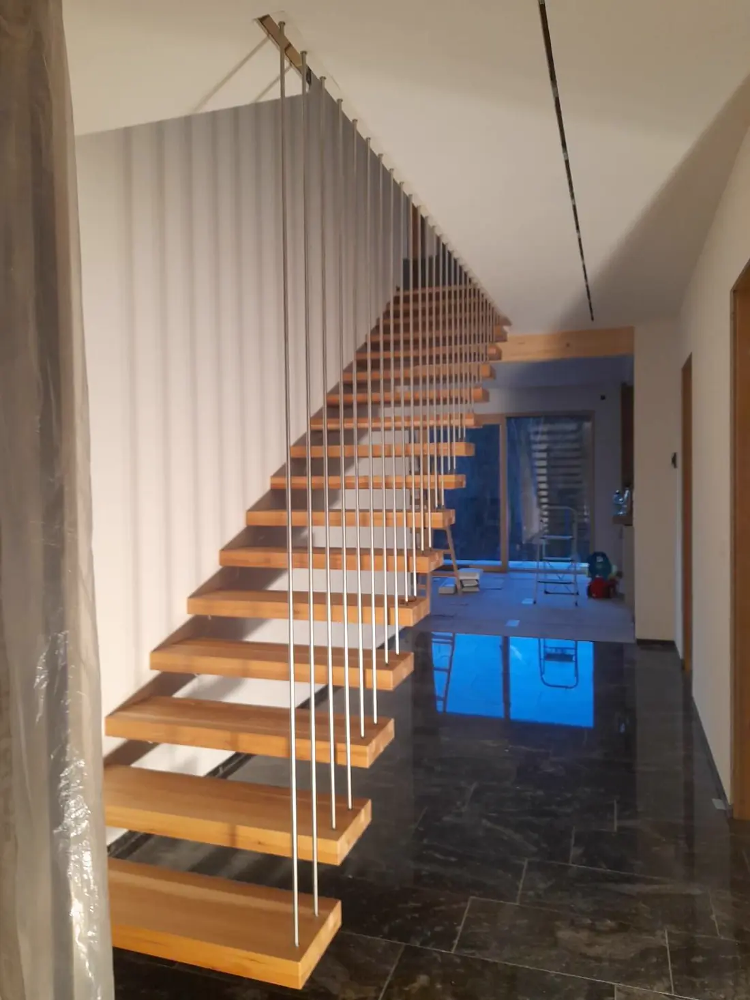
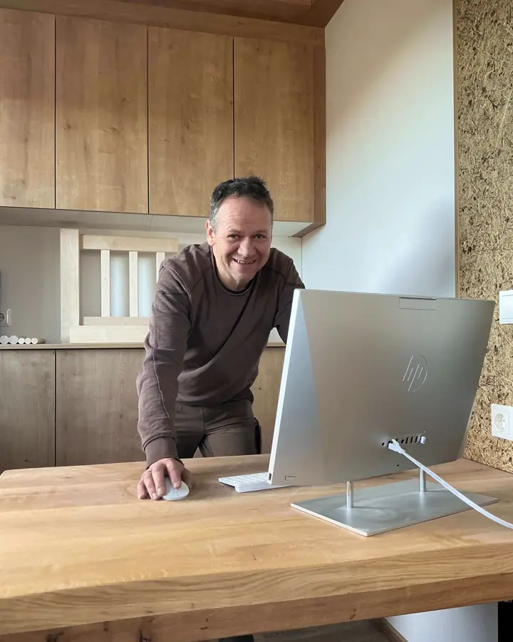

Werkstatt Schaueregg 23 · 2872 Pinggau · am Wechsel
Küchen, Möbel und Stiegen – gebaut für genau Ihren Raum.
Ihre Tischlerei für Pinggau, Mönichkirchen und Umgebung. Gottfried Ochenbauer plant mit Ihnen, fertigt in der eigenen Werkstatt in Schaueregg und montiert bei Ihnen zu Hause. Die Beratung ist kostenlos und unverbindlich.

02 — Werkstücke
Arbeiten aus der Werkstatt in Schaueregg
Weitere Arbeiten
03 — Leistungen
Was wir für Sie bauen

Küchen
Von der ersten Idee bis zur letzten Schraube: Ihre Küche, genau so, wie Sie sie sich vorstellen. Nach Ihrem Grundriss geplant und in unserer Werkstatt gefertigt.
Mehr über Küchen nach Maß
Möbel
Kein Standardmaß: Jedes Möbelstück entsteht nach Ihren Wünschen und fügt sich in Ihren Raum ein.
Mehr über Möbel nach MaßStiegen
Eine Stiege verbindet mehr als zwei Stockwerke. Wir bauen sie so, dass sie täglich Freude macht.
Mehr über HolzstiegenAußerdem
- Planung & Beratung
- Gut geplant ist halb gebaut. Wir beraten Sie persönlich, kostenlos und unverbindlich.
- Montage
- Pünktlich und ohne Stress, von Anfang bis Ende.
- Reparatur & Restaurierung
- Manchmal braucht ein altes Möbelstück nur die richtigen Hände.
- Holzhandel
- Ausgesuchte Hölzer, direkt beim Fachmann. Mehr zum Holzhandel
Konstruktion
Zwei klassische Holzverbindungen
Zinken und Zapfen gehören zum Handwerkszeug des Tischlers. Gut gemacht, halten sie ohne Beschläge und lassen sich auch nach Jahren noch reparieren.

04 — Über uns
Holzhandwerk mit Herzblut
Seit mehr als 20 Jahren arbeitet Gottfried Ochenbauer an Holzprojekten jeder Größe, seit 2014 mit eigener Tischlerei. Sie liegt in Schaueregg, Gemeinde Pinggau, direkt an der Grenze zwischen Steiermark und Niederösterreich, nahe Friedberg und Mönichkirchen.
Von hier aus bietet er persönliche Beratung und solide Handwerksarbeit. Bei uns sprechen Sie vom ersten Gespräch bis zur Montage direkt mit dem Tischler.
„Jedes Stück Holz erzählt eine Geschichte – wir geben ihr Form.“
- Eigener Betrieb seit
- 2014
- Werkstatt
- Schaueregg 23, Pinggau
- Telefon
- +43 664 73617208
05 — Holzhandel
Holz für Ihr eigenes Projekt
Zur Tischlerei gehört ein Holzhandel: ausgesuchte Hölzer, direkt beim Fachmann. Fragen Sie telefonisch nach, welche Hölzer und Stärken gerade lagernd sind.
Anrufen: +43 664 7361720806 — Region & Fragen
Wo wir arbeiten
- Pinggau
- Friedberg
- Mönichkirchen
- Wechselland
- ganz Österreich
Die Werkstatt liegt in Schaueregg, direkt an der Grenze zu Niederösterreich. Orte und Entfernungen
Häufige Fragen
Schaueregg 23, 2872 Pinggau. Schaueregg gehört zur Gemeinde Pinggau und teilt sich die Postleitzahl 2872 mit Mönichkirchen. Darum steht auf Google Maps „2872 Mönichkirchen“. Mehr zum Standort
Vor allem in Pinggau, Friedberg, Mönichkirchen und dem Wechselland, grundsätzlich aber in ganz Österreich. Orte und Entfernungen
Küchen, Möbel und Holzstiegen nach Maß, dazu Montage, Reparatur, Restaurierung und Holzhandel.
Nichts: Wir beraten Sie persönlich, kostenlos und unverbindlich. Rufen Sie an unter 0664 73617208.
07 — Kontakt
Am schnellsten erreichen Sie uns telefonisch.
+43 664 73617208- Erreichbarkeit
- nach Absprache
Bewertungen auf Google lesen (öffnet in neuem Tab) Bewertung schreiben (öffnet in neuem Tab)
Anfrage angekommen
Danke. Wir melden uns bei Ihnen – per E-Mail oder, wenn Sie eine Nummer angegeben haben, telefonisch.